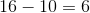

Matematică distractivă: utilizarea numerelor întregi
Problema 1
Durează  minute să tai o panglică de cm ȋn bucăţi de câte
minute să tai o panglică de cm ȋn bucăţi de câte  cm. De cât timp am nevoie pentru a tăia aceste bucăţi de panglică ȋn bucăţi de câte
cm. De cât timp am nevoie pentru a tăia aceste bucăţi de panglică ȋn bucăţi de câte  cm, păstrând acelaşi ritm?
cm, păstrând acelaşi ritm?
Soluție:
Pentru a tăia panglica de cm ȋn bucăţi de câte cm este nevoie de tăieturi.

Deci, o tăietură se face în:
.
Pentru a tăia fiecare dintre panglicile de cm în bucăţi de cm e nevoie de câte  tăieturi, adică în total sunt
tăieturi, adică în total sunt  tăieturi.
tăieturi.

Acestea sunt realizate în:
.
Problema 2
În  lăzi de pe raft sunt lămâi și portocale. Fiecare ladă conţine un singur sortiment de fructe. Erau de fructe în prima cutie,
lăzi de pe raft sunt lămâi și portocale. Fiecare ladă conţine un singur sortiment de fructe. Erau de fructe în prima cutie,  fructe ȋn a doua cutie, în a treia cutie, în a patra cutie, în a cincea cutie. După ce o ladă de fructe s-a vândut, au rămas de trei ori mai puţine portocale decât lămâi. Câte lămâi şi portocale mai sunt pe raft?
fructe ȋn a doua cutie, în a treia cutie, în a patra cutie, în a cincea cutie. După ce o ladă de fructe s-a vândut, au rămas de trei ori mai puţine portocale decât lămâi. Câte lămâi şi portocale mai sunt pe raft?
Soluție:
În total sunt
fructe.
După ce s-a vândut o ladă cu fructe, numărul fructelor rămase este multiplu de  , deci lada vândută conţinea de fructe.
, deci lada vândută conţinea de fructe.
Pe raft au rămas
fructe.
Știm că au rămas de trei ori mai puţine portocale decât lămâi.
Notăm cu  numărul portocalelor. Avem că este numărul lămâilor.
numărul portocalelor. Avem că este numărul lămâilor.
Atunci, avem că:


.
Așadar, au rămas portocale.
Lămâile rămase sunt în număr de:
lămâi.
Verificare:
.
Problema 3
La mine în clasă sunt  de elevi;
de elevi;  dintre ei au media peste , iar
dintre ei au media peste , iar  au media sub
au media sub  . Câţi elevi au media peste şi câţi elevi au media sub ?
. Câţi elevi au media peste şi câţi elevi au media sub ?
Soluție:
Calculăm câți elevi au media cuprinsă ȋntre și :
.
 elevi au media cuprinsă între şi .
elevi au media cuprinsă între şi .
Calculăm acum numărul elevilor care au media peste :
 elevi,
elevi,
respectiv a elevilor care au media sub :
elevi.
Problema 4
Care este a -a cifră din secvenţa ?
Soluție:
Observăm că secvenţa care se repetă este care este alcătuită din cifre.
Secvenţa se repetă de ori, deci a -a cifră este  .
.
Problema 5
John şi-a invitat cei prieteni la masă. Ei au plătit consumaţia în mod egal, dar, la sfârşitul mesei, John a oferit fiecăruia câte o cafea. Suma plătită pentru consumaţie şi cafele a fost de euro (din care cafelele au reprezentat euro). Cât a costat consumaţia unei persoane?
Soluție:
Consumațiile celor persoane au costat euro, deci consumaţia unei persoane a costat euro.
Problema 6
castele sunt bântuite de stafii, însă nu există două castele bântuite de acelaşi număr de stafii şi în fiecare castel este cel puţin una. Care este cel mai mare număr de stafii dintr-un castel?
Soluție:
Numărul maxim de stafii dintr-un castel se obţine dacă ȋn celelalte castele este un număr minim de stafii, adică .
Deci, numărul maxim de stafii dintr-un castel este de
 stafii.
Problema 7
Roboţeii Pif, Paf, Puf știu să facă, fiecare, o singură operaţie: Pif adună cu , Paf scade , iar Puf înmulţeşte cu . În ce ordine lucrează roboţeii pentru ca, pornind de la , sã obținã ?
Soluție:
Matematic, datele problemei se pun așa:
Așadar, roboțelul Pif adună la numărul , roboțelul Puf înmulţeşte rezultatul cu , iar roboțelul Paf scade și astfel se obţine numărul .